Kalender
Zum Verständnis dieses Artikels sind folgende Seiten hilfreich:
In dieser Übersicht werden Programme zur Terminverwaltung aufgelistet, die jedoch nicht den Anspruch erheben, ein vollständiger Personal Information Manager zu sein. Die Sortierung ist ohne Wertung und rein alphabetisch. Weitere Programme zur Aufgabenverwaltung und Notizsammlung sind im Artikel Notizen zu finden.
Im Anschluss finden sich Hinweise auf Projekte, die eine gemeinsame Terminfindung wie bei Doodle  ermöglichen.
ermöglichen.
Grafische Programme¶
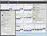
Cycle¶
Ein spezieller Menstruationskalender. Weitere Informationen gibt es im gleichnamigen Artikel cycle. Eine Alternative ist das ebenfalls in den Paketquellen enthaltene, auf Java basierende englischsprachige Programm Periodic Calendar  (pcalendar, ab Ubuntu 12.04).
(pcalendar, ab Ubuntu 12.04).
Dates¶
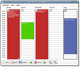 Dates ist ein kleiner und leichtgewichtiger Kalender, der seine Daten wie die GNOME-Uhr aus Evolution bzw. dessen Hintergrunddienst bezieht. Es wurde für Kleingeräte entwickelt, lässt sich jedoch auch auf einem Arbeitsplatzrechner einsetzen. Folgendes Paket muss installiert werden [1]:
dates (universe, bis Ubuntu 12.04)
 mit apturl
mit apturl
Paketliste zum Kopieren:
sudo apt-get install dates
sudo aptitude install dates
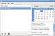
Day Planner¶
Day Planner ist ein selbstständiges Programm, das sich an die GNOME-Richtlinien zur Gestaltung grafischer Oberflächen hält, aber ansonsten nicht weiter in den Desktop integriert ist. Das standardisierte iCalendar-Format wird sowohl zum Austausch als auch zum Speichern des Kalenders verwendet. Für Ubuntu wird ein Fremdpaket zum Download angeboten, das manuell installiert [2] werden muss.
Hinweis!
Fremdpakete können das System gefährden.
Desklets¶
Im Artikel Desklets finden sich verschiedene Möglichkeiten, wie man u.a. einen Kalender als Miniprogramm direkt in den Desktop integrieren kann. Speziell die Screenlets-Module Clear Calendar , Now Calendar , Today Calendar und eigenCal ermöglichen das Einbinden von iCalendar-Dateien.
GNOME-Uhr¶
Das Uhr-Applet im Panel von GNOME 2 beinhaltete einen kleinen Kalender, der seine Daten (wie Dates) aus Evolution bezog. Interessant war die Möglichkeit, auch andere Kalender wie z.B. den Google Kalender mittels
/Pfad/zu/evolution-webcal iCalendar_Adresse
einzubinden. Wo sich evolution-webcal auf dem eigenen Rechner befindet, kann mit dem Befehl:
whereis evolution-webcal
ermittelt werden. Allerdings zielte diese Möglichkeit hauptsächlich auf die Anzeige von Terminen. Zur Pflege des Kalenders musste Evolution oder eine andere (externe Web-)Anwendung verwendet werden.
KOrganizer¶
KOrganizer ist das Kalenderprogramm des KDE-Desktops und Bestandteil der PIM-Suite Kontact.
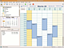
Mozilla Lightning¶
Das Mozilla Calendar Project stellt eine Erweiterung für das E-Mail Programm Thunderbird bereit. Mehr Informationen im Artikel Lightning.
Die Entwicklung des alleinstehenden Programms Sunbird wurde zugunsten von Lightning eingestellt.
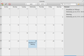
Maya¶
Der offizielle Kalender des Projekts elementary . Die Anwendung ist schlank und schick und wird noch aktiv weiterentwickelt. Die aktuelle Version ist die Version 0.2. Leider gibt es keine Wochenansicht, das Programm unterstützt aber seit Version 0.3 Online-Kalender per CalDAV und bietet Unterstützung für Google Kalender. Das Programm kann auf der entsprechenden Launchpad-Seite heruntergeladen werden.
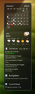
myDesktopCalendar¶
ist ein Kalenderprogramm, das Termine und Aufgaben direkt auf dem Desktop darstellt. Die Kalenderdaten werden im iCalendar-Format abgelegt. Siehe myDesktopCalendar.
Osmo¶
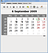 ist ein einfaches, aber effektives Programm, das einen Kalender bietet und Aufgaben, Kontakte und Notizen verwaltet. Es lässt sich in das Benachrichtigungsfeld der Leiste (Panel) minimieren und kann dann über anstehende Aufgaben und Termine (z.B. Geburtstage) benachrichtigen. Es lassen sich auch iCalendar-Dateien einbinden. Es lässt sich direkt aus den Paketquellen installieren. Zum Artikel Osmo.
Orage¶
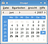 ist das offizielle Kalender-Applet des Xfce-Desktops. Es läuft völlig eigenständig von anderen Programmen, kann jedoch auch deren iCalendar-Dateien einbinden. Weitere Details im Wiki-Artikel Orage.
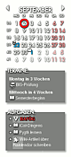
Rainlendar¶
ist ein Kalenderprogramm, das Termine und Aufgaben direkt auf dem Desktop darstellt. Die Kalenderdaten werden im iCalendar-Format abgelegt. Siehe Rainlendar.
RedNotebook¶
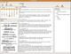 Einen anderen Ansatz verfolgt RedNotebook. Hier handelt es sich um eine Art digitales Tagebuch, das einen integrierten Kalender enthält. Es ist in den offiziellen Paketquellen enthalten. Weitere Details sind im ausführlichen Wiki-Artikel RedNotebook zu finden.
Webdienste¶
Webdienste lösen das Problem, dass sich frei nach Murphy dringend benötigte Termininformationen immer auf dem Gerät befinden, das gerade nicht verfügbar ist. Dieser Vorteil kann aber auch zum Nachteil werden, da man eigene Daten in die Hände eines externen Dienstleisters gibt.
Wer aus diesem Grund eigene Cloud-Dienste bevorzugt, schaut sich ownCloud an.
Kommandozeile¶
 Auch abseits der grafischen Desktop-Umgebungen gibt es Kalender-Anwendungen (für die Kommandozeile). Alle hier genannten Programme sind in den offiziellen Paketquellen enthalten.
Auch abseits der grafischen Desktop-Umgebungen gibt es Kalender-Anwendungen (für die Kommandozeile). Alle hier genannten Programme sind in den offiziellen Paketquellen enthalten.
cal¶
Eine einfaches Kommandozeilenprogramm ist cal aus dem Paket bsdmainutils (unter Ubuntu bereits vorinstalliert). Wird normalerweise benutzt, um den aktuellen Monat im Terminal anzuzeigen. Weitere Optionen sind der Manpage zu entnehmen. Wie das weiter unten beschriebene pcal keine Terminverwaltung, sondern ein Programm zum Erstellen von Basiskalendern.
calcurse¶
calcurse beinhaltet neben einem Kalender auch eine Aufgabenverwaltung. Im Unterschied zu den beiden nachfolgend genannten Anwendungen wird die zeichenorientierte Grafikbibliothek ncurses verwendet. Hilfreich ist evtl. auch folgende Programmbeschreibung: The Ultimate Organiser for the Console Junkie .
pal¶
pal ist eine Alternative zu when (siehe unten). In den offiziellen Paketquellen enthalten: pal.
pcal¶
pcal ist ein umfangreiches Werkzeug, um Kalender im PostScript- oder HTML-Format zu erzeugen. Es kann über das Paket pcal installiert werden. Als Ausgabe kann eine Monats- oder Jahresansicht gewählt werden, bei Bedarf mit Anzeige der Mondphasen und Terminen, die aus einer zusätzlichen Datei eingelesen werden. Das Programm dient nicht zum Verwalten von Terminen, sondern als Werkzeug zum Veröffentlichen von Kalendern bspw. für den Druck.
Ohne gesonderte Angabe von Monat oder Jahr erstellt pcal einen Kalender für den aktuellen Monat. Der folgende Befehl würde zum Beispiel eine PostScript-Datei im DIN-A4-Querformat erzeugen, Sprache ist deutsch, Zeitformat ist europäisch und Montag ist erster Tag der Woche:
pcal -P a4 -l -a de -E -F 1 -o kalender.ps
Dagegen würde dieser Befehl eine Jahresübersicht als HTML-Datei erzeugen:
pcal -a de -E -F 1 -w -H -o kalender.html
Weitere Details zu den möglichen Optionen finden sich in der umfassenden Manpage. Eine Alternative ist gcal (über das Paket gcal installierbar).
remind¶
remind aus dem Paket remind ist ein Schwergewicht für diejenigen, die vor einem Kalender mit integrierter Programmiersprache nicht zurückschrecken. Als Belohnung winken Extras wie Mondphasen, Sonnenaufgang/-untergang, ein hebräischer Kalender, Alarmfunktionen und eine PostScript-Ausgabe. wxRemind ist einer von mehreren Ansätzen, eine grafische Oberfläche zu schaffen.
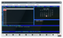
wyrd¶
wyrd aus dem Paket wyrd ist eine auf ncurses basierende Oberfläche für "remind", also ein Kalender der im Terminal läuft, aber dennoch dem User Hilfestelllungen gibt, ähnlich dem Midnight Commander. "wyrd" zeigt Erinnerungen in einem durchblätternbaren Zeitplan zusammen mit einem Kalender an. Der Benutzer kann dabei neue Erinnerungen anlegen. In Zusammenarbeit mit "remind" ist es möglich, den Kalender in PostScript umzuwandeln und mit Palm Handhelds zu synchronisieren. Für Konvertierungen iCal und Outlook gibt es Scripte . Für die wechselseitige remind/iCal Umwandlung gibt es auch eine Python Bibliothek , mit der sich mit externen iCal kompatiblen Servern Termine synchronsieren lassen, was dort in kurzen Beispielen gezeigt wird. Für das Duo "wyrd" + "remind" werden hier einige Beispielanwendungsfälle aufgezeigt , wie etwa für Termine Pop-ups gemacht werden. Ein "wyrd" Benutzerhandbuch steht online als PDF zur Verfügung. Für alle die sich fragen, warum eigentlich in Zeiten von virtuellen Assistentinnen wie Cortana, Google Now oder Siri, so etwas "altmodisches" oder Klassik wie das Duo "wyrd" + "remind", hier eine kurze Vortragsfolie als PDF.
wyrd (universe)
mit apturl
Paketliste zum Kopieren:
sudo apt-get install wyrd
sudo aptitude install wyrd
Gemeinsame Terminplanung¶
An dieser Stelle muss zwischen Kalender-Servern wie beispielsweise DAViCal und Programmen zur gemeinsamen Terminfindung unterschieden werden. Zu letzterem Punkt hier zwei Vorschläge, die beide mit einer verschlüsselten HTTPS-Verbindung arbeiten:


 und andere
und andere


 und andere
und andere
Weitere, aber proprietäre Alternativen ohne HTTPS sind z.B. fasterplan und CouchKiller .
Links¶
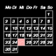
California
- Kalender für GNOME 3 (in Entwicklung; siehe Introducing California, a new GNOME 3 calendar , 03/2014)gsimplecal - einfacher Kalender (ohne Terminverwaltung) für alleinstehende Fenstermanager
GCALDaemon
- Webdienste mit lokalen Anwendungen synchronisierenimagemagick-kalendar
- Skript, das mit ImageMagick einen Monatskalendar (als Bild) erzeugt. Kann z.B. mit conky verwendet werden.Kalender auf sunbird-kalender.de
- Feiertage und Ferien als Kalenderdateien im .ics-Formatvollmond_2016-2020.ics
 - Vollmondtermine im .ics-Format
- Vollmondtermine im .ics-FormatSchulferien.org
- Kalenderdateien im .ics-Format für Schulferien und Feiertage sowie Erstellung von Kalendern im PDF-Format zum Herunterladen und AusdruckenPapierkalender:
dodecahedral (12 sided) calendar
- Jahreskalender (PDF)Custom PDF Calendar
- anpassbarer Monatskalender (PDF)Monthly Calendar
- anpassbarer Monatskalender (PDF)
- Erstellt mit Inyoka
-
 2004 – 2017 ubuntuusers.de • Einige Rechte vorbehalten
2004 – 2017 ubuntuusers.de • Einige Rechte vorbehalten
Lizenz • Kontakt • Datenschutz • Impressum • Serverstatus -
Serverhousing gespendet von